N2S3 VS NENGO
ÉTAT D’AVANCEMENT
30-11-2020
Couche d'entrée
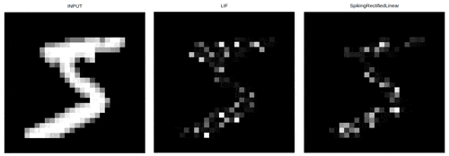
Introduction de donnée avec une pause
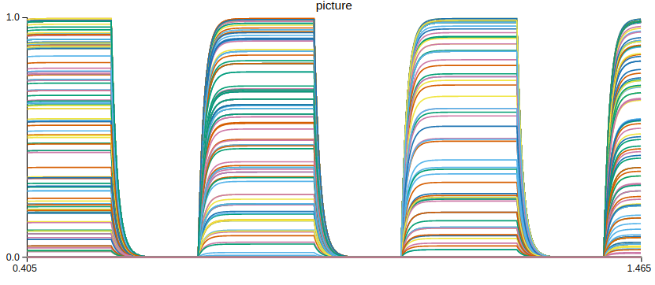

Régle d'apprentissage (STDP)
Traces d'éligibilité
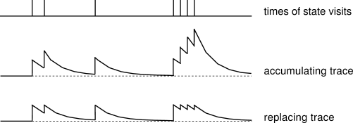
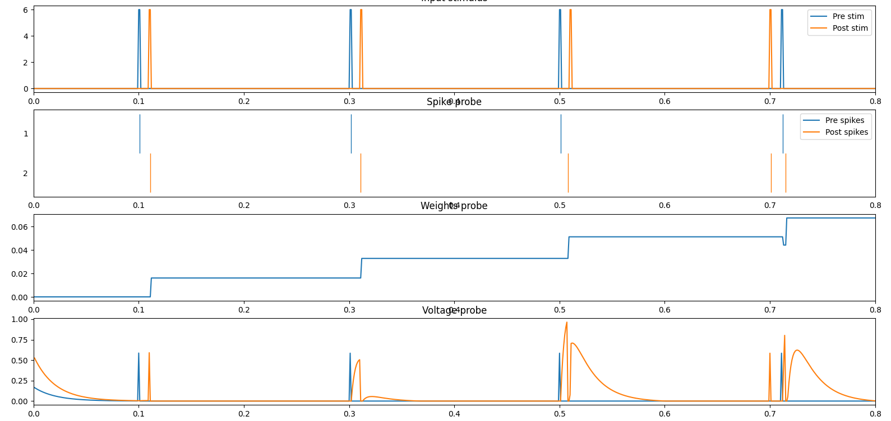
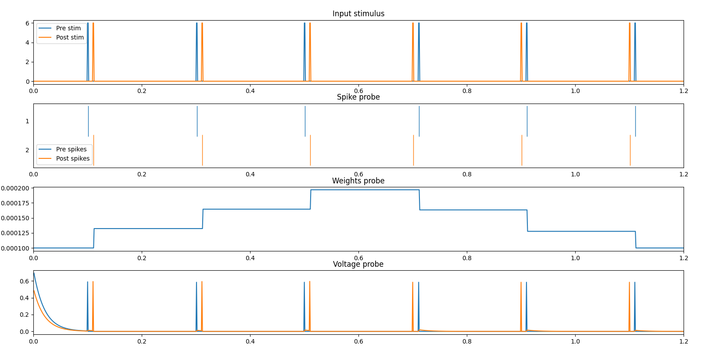
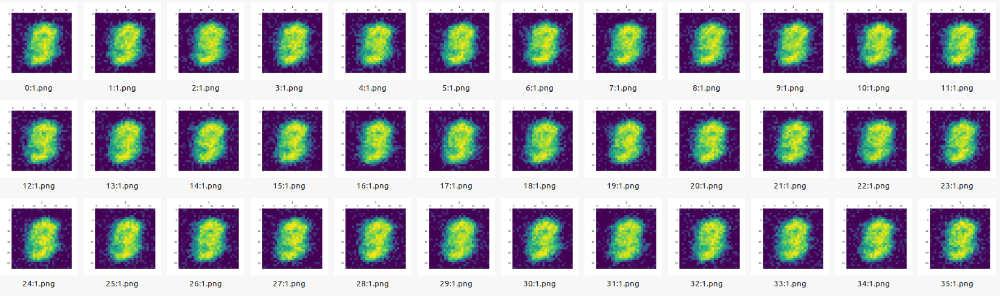
Inhibition latérale
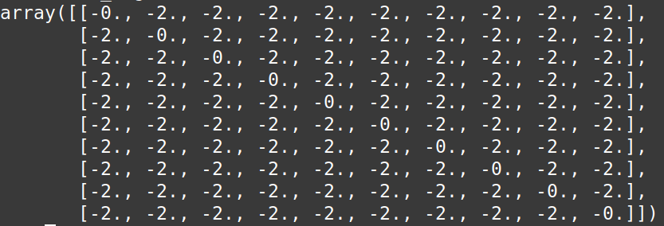
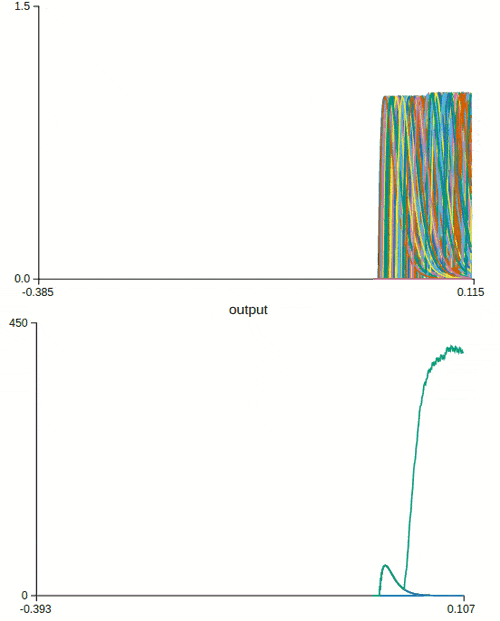
Inhibition latérale
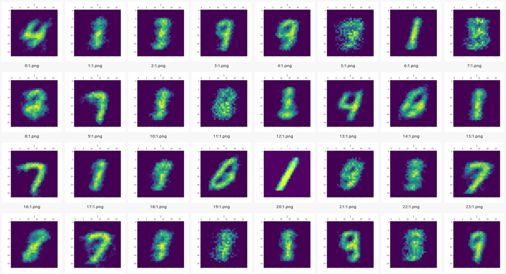
Types de neurones
La visualisation et l'élagage
Nengo with Spinnaker
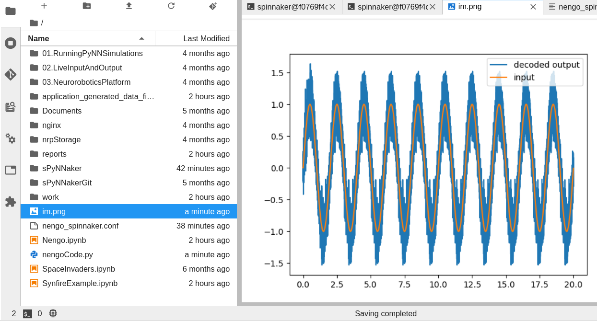
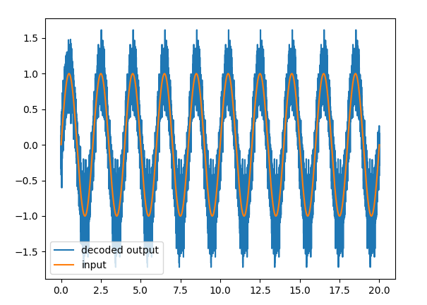
Nengo with Spinnaker
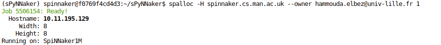
Simulation Multicouche